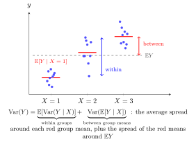

curriculum-current
pd-week06
Eve’s Law: Total Variance
For random variables X X X Y Y Y E [ Y 2 ] < ∞ \mathbb{E}[Y^2]<\infty E [ Y 2 ] < ∞
Var ( Y ) = E [ Var ( Y ∣ X ) ] + Var ( E [ Y ∣ X ] ) . \begin{aligned}
\operatorname{Var}(Y)=\mathbb{E}[\operatorname{Var}(Y\mid X)]+\operatorname{Var}(\mathbb{E}[Y\mid X]).
\end{aligned} Var ( Y ) = E [ Var ( Y ∣ X )] + Var ( E [ Y ∣ X ]) . Consequence: the residual Y − E [ Y ∣ X ] Y-\mathbb{E}[Y\mid X] Y − E [ Y ∣ X ] h ( X ) h(X) h ( X ) E [ h ( X ) 2 ] < ∞ \mathbb{E}[h(X)^2]<\infty E [ h ( X ) 2 ] < ∞
Cov ( Y − E [ Y ∣ X ] , h ( X ) ) = 0. \begin{aligned}
\operatorname{Cov}(Y-\mathbb{E}[Y\mid X],\,h(X))=0.
\end{aligned} Cov ( Y − E [ Y ∣ X ] , h ( X )) = 0. Total spread consists of average spread within conditional groups plus spread between their conditional means .

Var ( E [ Y ∣ X ] ) ≤ Var ( Y ) \operatorname{Var}(\mathbb{E}[Y\mid X])\le\operatorname{Var}(Y) Var ( E [ Y ∣ X ]) ≤ Var ( Y ) The residual R = Y − E [ Y ∣ X ] R=Y-\mathbb{E}[Y\mid X] R = Y − E [ Y ∣ X ] mean zero and Cov ( R , h ( X ) ) = 0 \operatorname{Cov}(R,h(X))=0 Cov ( R , h ( X )) = 0 h ( X ) h(X) h ( X )
If X ∼ Exp ( 2 ) X\sim\operatorname{Exp}(2) X ∼ Exp ( 2 ) Y ∣ X ∼ Pois ( X ) Y\mid X\sim\operatorname{Pois}(X) Y ∣ X ∼ Pois ( X ) Var ( Y ) = E X + Var ( X ) = 1 / 2 + 1 / 4 = 3 / 4 \operatorname{Var}(Y)=\mathbb{E}X+\operatorname{Var}(X)=1/2+1/4=3/4 Var ( Y ) = E X + Var ( X ) = 1/2 + 1/4 = 3/4
If X ∼ Unif ( 0 , 1 ) X\sim\operatorname{Unif}(0,1) X ∼ Unif ( 0 , 1 ) Y ∣ X ∼ Bin ( n , X ) Y\mid X\sim\operatorname{Bin}(n,X) Y ∣ X ∼ Bin ( n , X ) Var ( Y ) = n / 6 + n 2 / 12 = n ( n + 2 ) / 12 \operatorname{Var}(Y)=n/6+n^2/12=n(n+2)/12 Var ( Y ) = n /6 + n 2 /12 = n ( n + 2 ) /12
Nicky van Foreest · Probability Distributions · Week 6
Symbols: infinity
Last updated: 7 October 2026 15:18
Eve’s Law: Total Variance Conditioning Trick for Variance Conditional Variance Given a Random Variable Adam’s Law: Total Expectation Variance and Standard Deviation Covariance Taking Out What Is Known